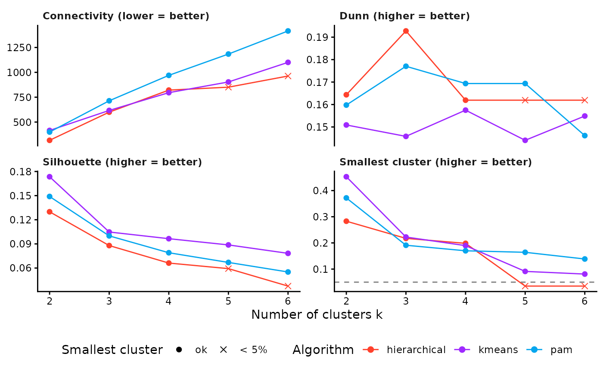

Compares several clustering algorithms and numbers of clusters with the clValid package, following the approach described by datanovia. All results are visualized with ggplot2.
Arguments
- x
The output of
seg_prep_data()(recommended), or a data frame or numeric matrix with already prepared clustering variables (no missing values).- cl_methods
Clustering algorithms to compare. Any of
"hierarchical"(stats::hclust()),"kmeans"(stats::kmeans()),"pam"(cluster::pam()),"diana"(cluster::diana()) and"clara"(cluster::clara()). Defaults toc("hierarchical", "kmeans", "pam").- k
Numbers of clusters to compare. Defaults to
2:6.- validation
"internal"(default),"stability"or both. Stability measures re-run all clusterings once per clustering variable and are therefore much slower (about 10 times for 20 variables).- linkage
Agglomeration method for hierarchical clustering: one of
"ward","complete","average"or"single"(the options supported by clValid). Note that clValid also uses the hierarchical solution to initialize k-means. Defaults to"ward"(clValid's default"average"tends to produce one large cluster and a few tiny ones). clValid's"ward"corresponds to"ward.D"instats::hclust(), a slightly different variant than the"ward.D2"used inseg_optimal_clusters().- metric
Distance metric used by clValid:
"euclidean","manhattan"or"correlation". IfNULL(default), it is taken from theseg_prep_data()output where possible ("pearson"becomes"correlation"), otherwise"euclidean".- neighb_size
Number of neighbors considered for the connectivity measure. Defaults to 10.
Solutions whose smallest cluster contains a lower share of respondents are flagged. Defaults to 0.05 (5%).
- seed
Random seed (only relevant for
"clara"). The global random seed is left untouched. Defaults to 123.- verbose
Logical. Whether to print the results. Defaults to
TRUE.
Value
An object of class seg_algorithms, a list with the elements:
measures: tibble (long format) with all validation measures per algorithm and number of clusters, incl. the share of the smallest cluster.optimal: tibble with the best algorithm and number of clusters per measure (clValid::optimalScores()), with and without the solutions belowmin_cluster_share.cluster_sizes: tibble with the cluster sizes of each solution.plot: all measures in one faceted plot.plots: named list with one plot per measure.clvalid: list with theclValid::clValid()output(s).settings: list of the settings used.
Details
Each algorithm is run for each number of clusters in k, and every
solution is scored with several validation measures. Two families of
measures are available.
Internal measures
Internal measures (validation = "internal", fast) use only the data and
the clustering itself. They assess the two properties a good partition
should have: compactness (respondents in the same cluster are similar)
and separation (respondents in different clusters are dissimilar).
Connectivity (range 0 to Inf, lower is better). For each respondent \(i\), the
neighb_sizenearest neighbors are determined. If the \(j\)-th nearest neighbor of \(i\) is not in the same cluster as \(i\), a penalty of \(1/j\) is added, so that close neighbors in another cluster are penalized more than distant ones. The connectivity is the sum of these penalties over all respondents. Rationale: neighbors should end up in the same cluster (connectedness). When to use: to check that the clusters are coherent regions of the data rather than arbitrary cuts. As more clusters create more boundaries, connectivity almost always increases with k and therefore favors few clusters; compare algorithms at the same k rather than across k. The result depends onneighb_size.Silhouette width (range -1 to 1, higher is better). For each respondent \(i\), \(a_i\) is the average distance to the other members of its own cluster and \(b_i\) the average distance to the members of the nearest other cluster. The silhouette is \(s_i = (b_i - a_i) / \max(a_i, b_i)\); the measure is its average over all respondents. Values close to 1 indicate well clustered respondents, values around 0 respondents between two clusters, and negative values respondents that are probably in the wrong cluster. Rationale: combines compactness and separation in a single, easy-to-interpret number. When to use: the most widely used general purpose measure and a good default for comparing solutions across algorithms and k. It tends to favor few, roughly spherical clusters. For attitudinal survey data, values of 0.1 to 0.25 are common.
Dunn index (range 0 to Inf, higher is better). The smallest distance between two respondents in different clusters, divided by the largest distance between two respondents in the same cluster (the largest cluster diameter). Rationale: relates the worst-case separation to the worst-case compactness. When to use: when well separated clusters are expected. As it relies on a single minimum and a single maximum, it is very sensitive to outliers and noise; for survey data it is best used as a secondary measure.
Stability measures
Stability measures (validation = "stability", slow) compare the
clustering of the full data with the clusterings obtained after removing
one clustering variable at a time, averaged over all variables. A stable
solution should not change much when a single variable is left out. All
stability measures are better when lower.
APN (average proportion of non-overlap, range 0 to 1). The average proportion of respondents that are not placed in the same cluster in the full and in the reduced data. Rationale: stability of the cluster assignment of individual respondents. When to use: to make sure that the segment membership does not depend on a single item, e.g. if the item battery might be shortened in later waves or if a typing tool will be built.
AD (average distance, range 0 to Inf). The average distance between respondents placed in the same cluster in both the full and the reduced data. Rationale: combines stability and compactness. When to use: together with APN. Like any within-cluster distance, it decreases with more clusters and thus favors larger k.
ADM (average distance between means, range 0 to Inf). The average distance between the cluster centers of respondents placed in the same cluster in the full and the reduced data. Rationale: stability of the cluster profiles (centers) rather than of individual assignments. When to use: when the segment profiles (e.g. for personas or reporting) should be robust to the selection of items.
FOM (figure of merit, range 0 to Inf). The average within-cluster variance of the left-out variable, when the clustering is based on the remaining variables only. Rationale: measures how well the clusters predict a variable that was not used to build them. When to use: to assess whether the segments reflect a general structure in the data rather than a few items. It decreases with more clusters and thus favors larger k.
Choosing an algorithm
No single measure is decisive, and the measures often disagree, as they
value different properties. Prefer algorithms that rank well on several
measures at the same k, use the internal measures for a quick screening and
add the stability measures for the short list. Measures that mechanically
improve with k (connectivity favors few, AD and FOM favor many clusters)
should be read as curves rather than by their optimum. Finally, combine the
results with seg_optimal_clusters(), the cluster sizes and the
interpretability of the segments.
Cluster sizes
The validation measures do not consider the size of the clusters. Linkage
methods such as "average" or "single" often produce one very large
cluster and a few tiny ones, which can score well on connectivity and Dunn
but is useless as a segmentation. The share of the smallest cluster is
therefore reported for each solution ($cluster_sizes) and shown in the
plots; solutions below min_cluster_share are flagged.
References
Brock, G., Pihur, V., Datta, S. and Datta, S. (2008). clValid: An R Package for Cluster Validation. Journal of Statistical Software, 25(4), 1-22. doi:10.18637/jss.v025.i04
Examples
# \donttest{
prep <- seg_prep_data(
sm_synthetic,
vars = dplyr::starts_with("F50_0_"),
missing = "mice",
max_missing_prop = 0.2,
verbose = FALSE
)
algorithms <- seg_compare_algorithms(prep)
#>
#> ── Comparison of clustering algorithms ──
#>
#> Algorithms: "hierarchical", "kmeans", and "pam" | k = 2 to 6 | linkage: "ward"
#> | metric: "euclidean"
#> • Connectivity (lower = better): hierarchical, k = 2 (smallest cluster: 28%)
#> • Dunn (higher = better): hierarchical, k = 3 (smallest cluster: 22%)
#> • Silhouette (higher = better): kmeans, k = 2 (smallest cluster: 45%)
#> ! 2 solutions with a cluster below 5% of respondents (see `$cluster_sizes`).
#> See the plots in `$plot`.
algorithms$plot

# }